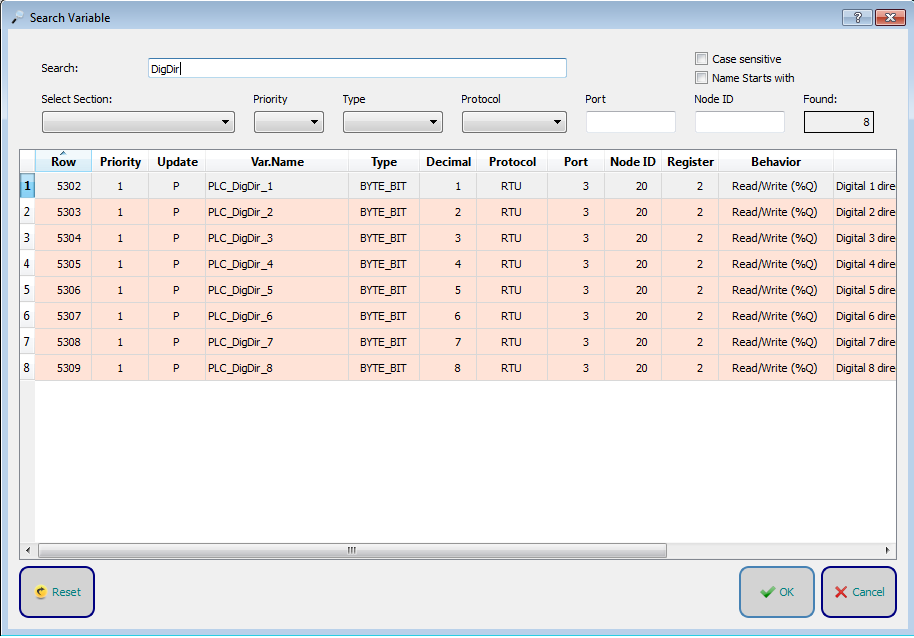
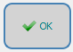
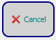

The Reset button resets all the search parameters.
The Reset button resets all the search parameters.
Click on the search button to open the advanced search window.

In the window it is possible to refine the search by selecting the parameters that make up the variables in Crosstable.
The Reset button resets all the search parameters.
 The OK key goes in the Crosstable to the selected variable.
 The Cancel key closes the window.